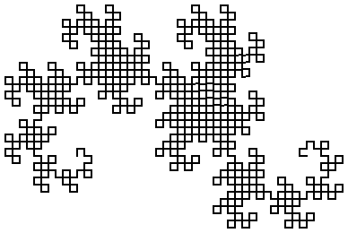

7 Simplified Lindenmayer System Language
| #lang lindenmayer/simple | package: lindenmayer |
The lindenmayer/simple language is a trimmed down version of #lang lindenmayer that supports only a single Lindenmayer system and does not support parametric or conditional Lindenmayer systems, nor does it support interoperability with other languages. It is intended to be a digestible example of a language implemented with #lang.
Here is one example use of the language.
| #lang lindenmayer/simple |
| ## axiom ## |
| A |
| ## rules ## |
| A -> AB |
| B -> A |
| ## variables ## |
| n=3 |
When it is run, it produces the output ABAAB.
There are three main pieces to the implementation of the language: the parser, which translates the notations above into a use of lindenmayer-system, the macros that translate that into a call to the run-lindenmayer function, and then that function itself.
7.1 The Parser
| (require lindenmayer/simple/parse) | package: lindenmayer |
procedure
(parse-module port name) → syntax?
port : input-port? name : any/c
'(module name racket/base |
(require lindenmayer/simple/compile) |
(define (finish val) (newline)) |
(define (A value) (display 'A)) |
(define (B value) (display 'B)) |
(lindenmayer-system |
(void) |
finish |
3 |
(A) |
(A -> A B) |
(B -> A))) |
|
7.2 The Compiler
| (require lindenmayer/simple/compile) | |
| package: lindenmayer | |
syntax
(lindenmayer-system start-expr finish-expr iterations-expr axiom rule ...)
axiom = (id ...) rule = (id -> id ...) | (id → id ...)
start-expr : any/c
finish-expr : (-> any/c any/c)
iterations-expr : natural?
This form is implemented by compiling into a call to run-lindenmayer.
(define (A lst) (cons 'A lst))
(define (B lst) (cons 'B lst))
> (lindenmayer-system '() reverse 3 (A) (A -> A B) (B -> A)) '(A B A A B)
(define (X t) t)
(define (Y t) t)
(define (F t) (draw 4 t))
(define (↰ t) (turn -90 t))
(define (↱ t) (turn 90 t))
> (lindenmayer-system (turn 90 (turtles 100 100)) turtles-pict 10 (F X) (X -> X ↰ Y F ↰) (Y -> ↱ F X ↱ Y)) 
7.3 The Runtime
| (require lindenmayer/simple/run) | package: lindenmayer |
This module is implemented in Typed Racket, so its inputs are described as types. (Typed Racket can be called from Racket, and vice-versa.)
type
(Lindenmayer-Dag α)
struct
(struct cell (item) #:extra-constructor-name make-cell #:mutable) item : (Lindenmayer-Dag α)
procedure
(run-lindenmayer iterations axiom nts rules init) → α iterations : Natural axiom : (cell α) nts : (Listof (cell α))
rules :
(Listof (-> (Listof (cell α)) (Listof (cell α)))) init : α
The axiom is expected to be an interior node whose children are all leaves (and thus contain procedures). The nts and the rules arguments are expected to have the same length; each pair of elements (one from each argument) together represent a single rule. When performing a rewriting step, run-lindenmayer replaces each non-terminal by invoking the corresponding element of rules.
The init argument is used after the final Lindenmayer string is constructed. It is passed to the first leaf in the DAG representing the Lindenmayer string and then the result of that procedure is passed to the next, and so on, until the last one, whose result is the result of the entire call to run-lindenmayer
(define (A-proc val) (cons 'A val))
(define (B-proc val) (cons 'B val))
(define A (cell A-proc))
(define B (cell B-proc))
> (reverse (run-lindenmayer 4 (cell (list A)) ; the axiom, as a cell (list A B) ; the non-terminals ; procedures that perform the rule rewrites (list (λ (lst) (list (list-ref lst 0) (list-ref lst 1))) (λ (lst) (list (list-ref lst 0)))) ; the initial value '())) '(A B A A B A B A)
7.4 Syntax Colorer
| (require lindenmayer/simple/lex) | package: lindenmayer |
value